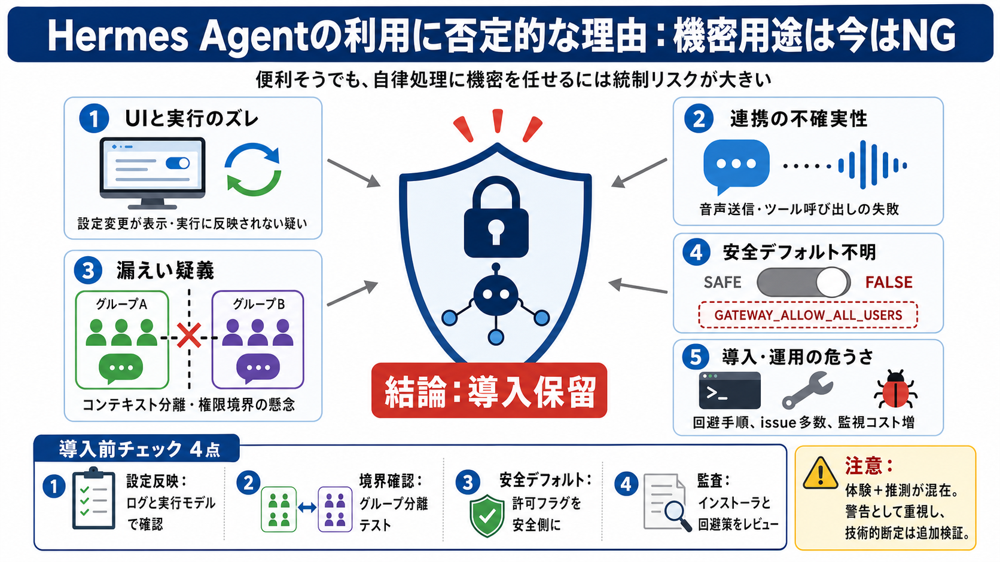

Not just a bag, it's Hermès. Timeless. Iconic. ✨ #hermes # ...
Timeless elegance, unmatched luxury. The Hermès bag is more than an accessory—it's a symbol of class, style, and sophist…

モデル設定や状態管理が意図通り反映されるか（表示と実行の一致）。
Telegram等で機密が漏れないか／権限・許可フラグが安全か。
モデル変更でも一部UIに旧モデルが残る（表示不整合）。
想定外のモデル動作で、挙動（安全・情報処理）やコストが変わる。
Telegram連携で音声メッセージ送信の不具合。
ツール呼び出しがズレる → 誤送信・再試行・監視負荷の増加。
コンテキストを他グループに出さない（非公開）。
別グループで機密情報“らしき内容”が返る（不一致）。
GATEWAY_ALLOW_ALL_USERS
許可範囲が意図せず広がる可能性（安全側デフォルト不足）。
Execution Policy回避 → npm.cmd
環境差異を吸収しきれず、監査・是正が難しくなる。
issue数：約9千（とされる）。
応答性の低さ、非直感的な挙動。
重大バグの残存や監視コスト増の可能性。
再現条件、参照時点のデータ、返答の根拠（ログ等）。
断定を避け、追加テストで切り分ける。
LLMの確率誤差 vs エージェント統制の破れ。
メモリ保持・セッション結合・ログ参照・権限境界。
ログや実行モデルで確認（表示と実挙動の一致）。
グループ分離テスト：コンテキスト混入の有無。
許可フラグ（例：GATEWAY_ALLOW_ALL_USERS）を安全側に。
インストーラの回避・分岐をレビュー（危うさの除去）。
同じ話ではない（設計統制の論点）。
“約束と結果の不一致”＝参照境界の疑い。
UI/実行ズレは性能・安全・コストの崩れ。
機密用途は避け、統制の確認が済むまで導入を保留。
設定反映・境界・デフォルト・監査を具体的に実施。
機密情報の自律委託（一般用途）。
ログでのモデル反映、分離テスト、安全デフォルト、監査。
Timeless elegance, unmatched luxury. The Hermès bag is more than an accessory—it's a symbol of class, style, and sophist…
In this video, we're covering WHY the Hermes game exists and why it is the way that it is, focusing on three key areas: …
Find our Hermès stores in New York, United States. ) Location 706 Madison Avenue, New York, NY 10065, United States Phon…
At Consign of the Times, we specialize in authentic designer consignment — offering a curated selection of luxury handba…
The Hermès Birkin is more than an accessory—it's a symbol of craftsmanship, timeless design, and effortless sophisticati…